Magic in this world is ancient, powerful, and often unpredictable. Dragons represent the most iconic form of magic—creatures tied deeply to the Valyrian bloodline and capable of reshaping kingdoms through fire and fear. Other forces, such as the warging abilities of the North or the prophetic visions of greenseers, hint at a deeper natural magic rooted in the Children of the Forest and the sacred weirwoods. Contrasting these are the sorceries of fire and ice. The White Walkers wield cold magic that raises the dead, while the followers of R’hllor call upon flames for resurrection and prophecy. Rare materials like dragonglass and Valyrian steel, forged through lost magical arts, stand as remnants of bygone ages. Magic is never fully understood, but its presence influences history, prophecy, and the fate of entire civilizations.
Fire-breathing reptiles born of Valyria; magic returns to the world when Daenerys hatches three eggs.
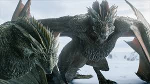
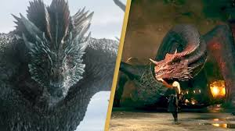
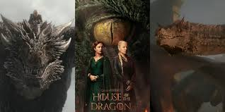
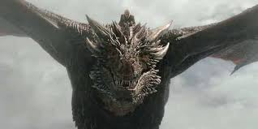
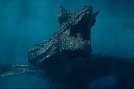
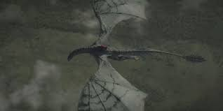
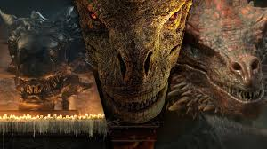
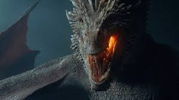
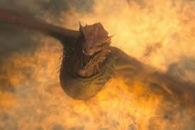
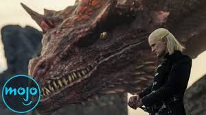
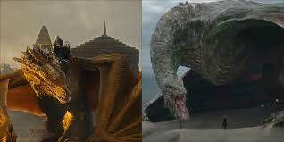
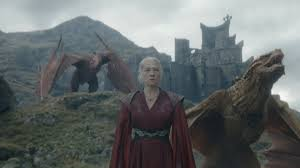
Ability to enter the minds of animals or other beings; strongest among the First Men and wildlings.
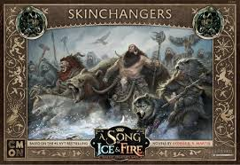
Prophetic visions or dreams; sometimes linked to weirwoods or children of the forest.
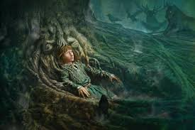
White-barked, red-leafed trees tied to ancient magic and memory.
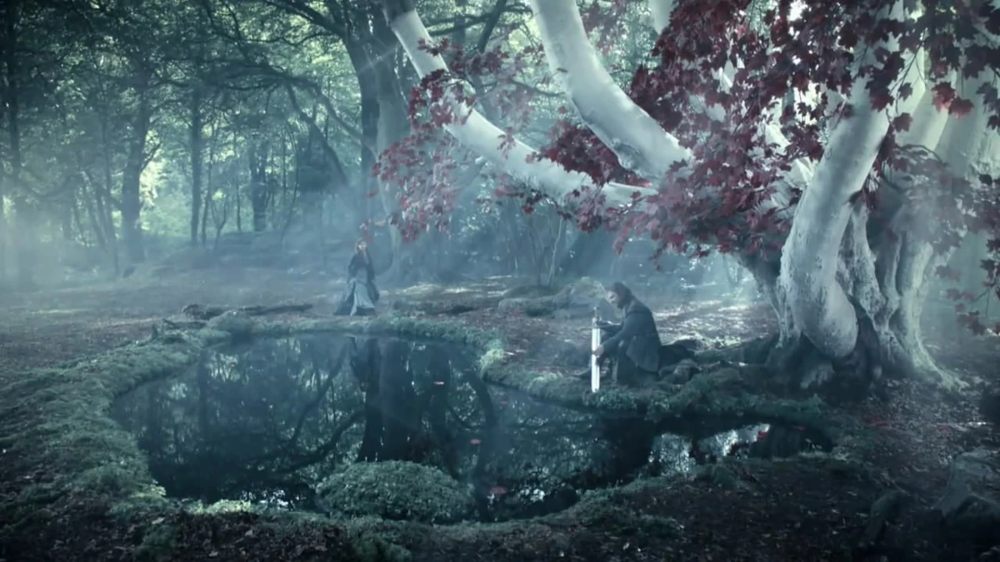
Magic that raises the dead, controls cold, and empowers ice creatures.
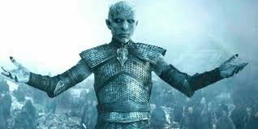
Miracles like resurrection (Beric, Jon Snow), shadowborn assassins, and prophetic flames.
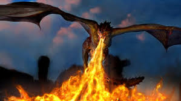
Magic-forged metal that can kill White Walkers; nearly lost art.
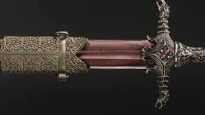
Obsidian artifacts used by the Valyrians for seeing across distances and influencing dreams.
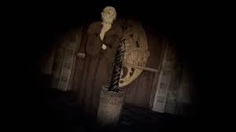
Volcanic glass that kills White Walkers; found in abundance at Dragonstone.
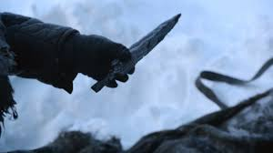